Exploratory and Explanatory Data Analysis
Follow your Curiosity, Focus your Story
Last Time
- Plain text files store characters; binary files need special software.
- YAML, CSV, and JSON add structure to plain text.
Key Ideas for Today
- EDA uncovers structure and generates new questions.
- Explanatory plots tell one story to one audience.
- Labels and scales clarify and focus comparisons.
- Themes and set aesthetics polish the look.
EDA
Exploratory Data Analysis (EDA)
- consumer: the analyst
- goal: uncover structure for further analysis, generate new questions
- visualization often follows templates
- prioritize quick and accurate interpretation
Common Exploratory Questions
- What is the unit of observation?
- What are the variables, their types, and levels?
- How is missingness encoded? How prevalent is it?
- What is the distribution of the variables?
- What is the relationship between the variables?
- Are there any interesting outliers?
The Dashboard is a classic exploratory tool Use
View()in Positron
Guess the Metaphor
EDA is like an archaeological dig: you never know what you might find and the more you discover, the more you dig.
Your Turn
Questions:
- Sketch the data frame that was used to create this plot.
- Describe the aesthetic mappings and geometry used.
- What is the main story?
02:30
Exploratory Data Analysis
The Data
# A tibble: 51 × 2
State Count
<chr> <dbl>
1 Alabama 13047
2 Alaska 2697
3 Arizona 89798
4 Arkansas 7108
5 California 1256646
6 Colorado 90083
7 Connecticut 31557
8 Delaware 8435
9 District of Columbia 8066
10 Florida 254878
# ℹ 41 more rowsQ1: What are the cols and rows?
Q1: What are the cols and rows?
# A tibble: 51 × 2
State Count
<chr> <dbl>
1 Alabama 13047
2 Alaska 2697
3 Arizona 89798
4 Arkansas 7108
5 California 1256646
6 Colorado 90083
7 Connecticut 31557
8 Delaware 8435
9 District of Columbia 8066
10 Florida 254878
# ℹ 41 more rows- Unit of observation: a state (or DC)
- Variables: name (character) and registration count (double)
Q2: Is there any missing data?
Option 1: Total missing counts
# A tibble: 1 × 1
n_missing
<int>
1 0Q3: What is the distribution of count?
Q3: What is the distribution of count?
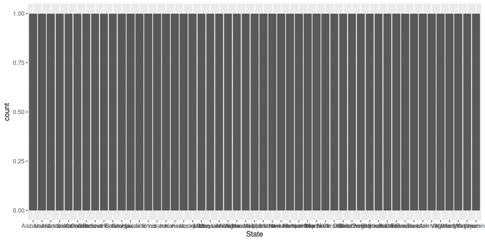
Q3: What is the distribution of count?
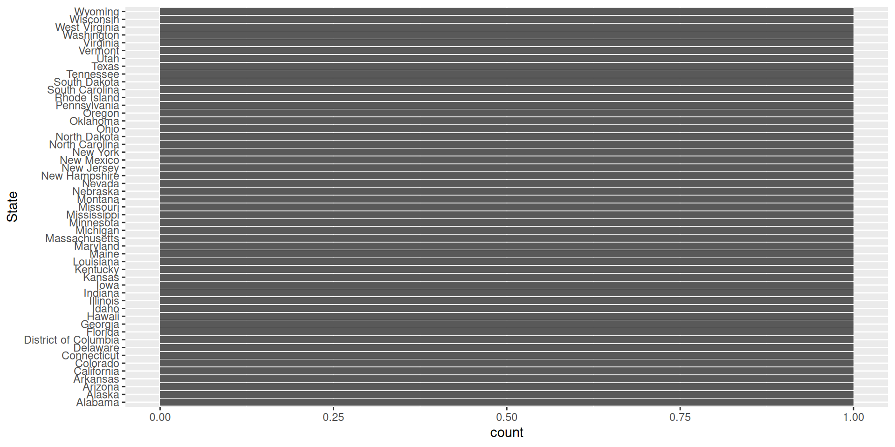
geom_bar()
Counts up the number of observations in each level of a single variable, then draws bars up to that height.
# A tibble: 344 × 8
species island bill_length_mm bill_depth_mm flipper_length_mm body_mass_g
<fct> <fct> <dbl> <dbl> <int> <int>
1 Adelie Torgersen 39.1 18.7 181 3750
2 Adelie Torgersen 39.5 17.4 186 3800
3 Adelie Torgersen 40.3 18 195 3250
4 Adelie Torgersen NA NA NA NA
5 Adelie Torgersen 36.7 19.3 193 3450
6 Adelie Torgersen 39.3 20.6 190 3650
7 Adelie Torgersen 38.9 17.8 181 3625
8 Adelie Torgersen 39.2 19.6 195 4675
9 Adelie Torgersen 34.1 18.1 193 3475
10 Adelie Torgersen 42 20.2 190 4250
# ℹ 334 more rows
# ℹ 2 more variables: sex <fct>, year <int>geom_bar()
Counts up the number of observations in each level of a single variable, then draws bars up to that height.
Summarizing with counts
Summarizing with counts
# A tibble: 3 × 2
island n
<fct> <int>
1 Biscoe 168
2 Dream 124
3 Torgersen 52geom_col()
Takes one column of categories and draws a bar for each up to the height of a second column of counts.
Q3: What is the distribution of count?
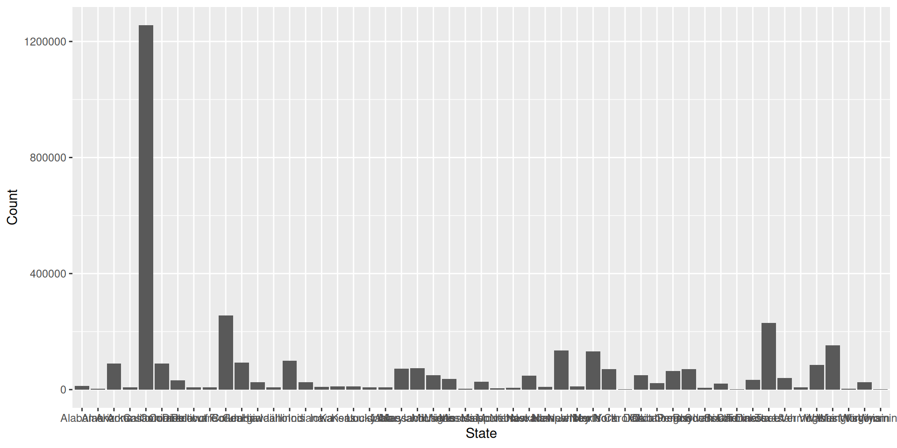
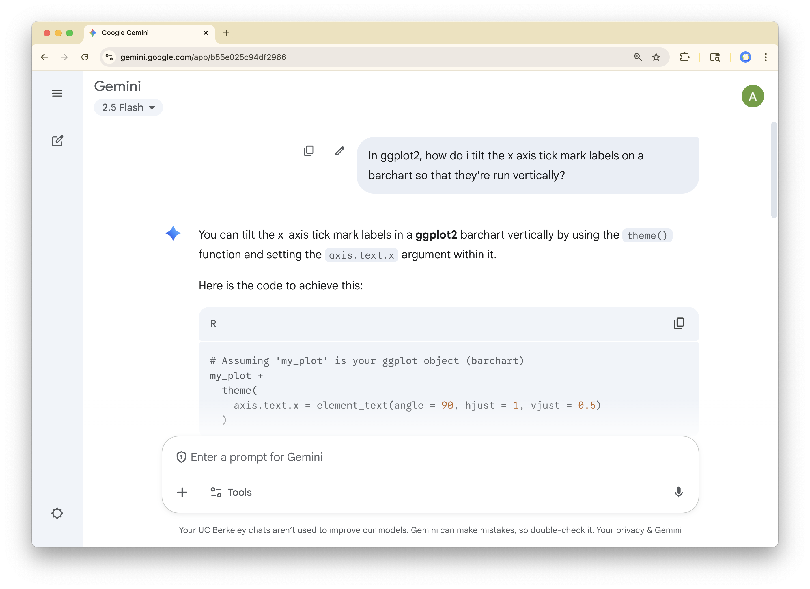
Q3: What is the distribution of count?
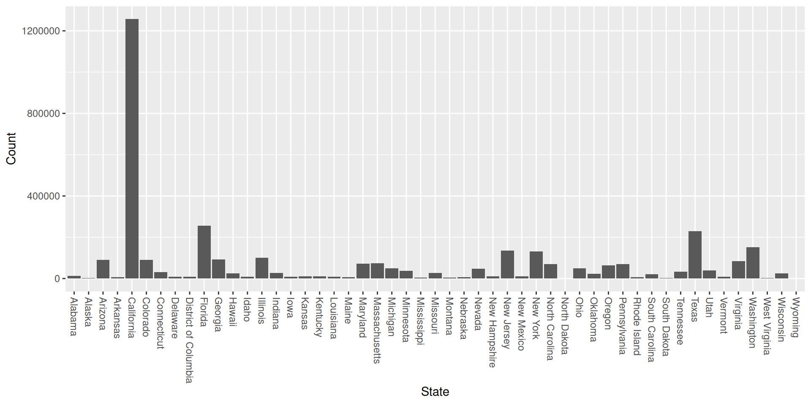
Exploratory Data Analysis (EDA)
Features
- consumer: the analyst
- goal: uncover structure for further analysis
- follow templates
- prioritize quick and accurate interpretation
Common Exploratory Questions
- What is the unit of observation?
- What are the variables, their types, and levels?
- How is missingness encoded? How prevalent is it?
- What is the dist. of the variables?
- What is the relationship between the variables?
Are there any interesting outliers?
Explanatory Data Analysis
Explanatory Data Analysis
Features
- consumer: stakeholder
- goal: tell a specific story
- customized
- polished aesthetic
Common Explanatory Questions
- Who is my audience?
- What is the main story?
- How can I facilitate comparisons?
- Can my plot be clearly read?
- Is it polished and customized for audience?
Gameplan
- Clarify with Labels
- Facilitate Comparisons
- Polish Your Look
- Themes
- Setting aesthetics
- Electric Vehicles Revisited
Clarify with Labels
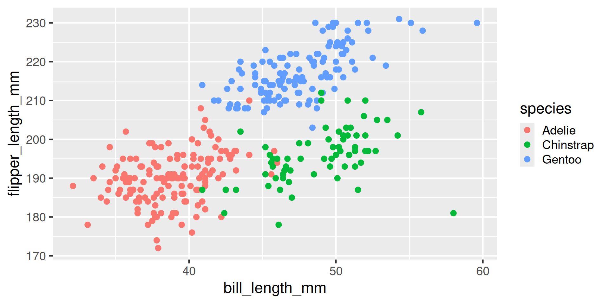
Labels with labs()
The labels on the plot can refer to many different places where text is added to describe what is plotted.
- title
- subtitle
- x-axis
- y-axis
- legends
In ggplot2, these are arguments to a labs() layer.
titlesubtitlecolorfillsizeshape


Facilitate Comparisons
Facilitating Comparison
- How does this compare to that?
- How does this compare to what’s typical?
- How big is this variability relative to that variability?
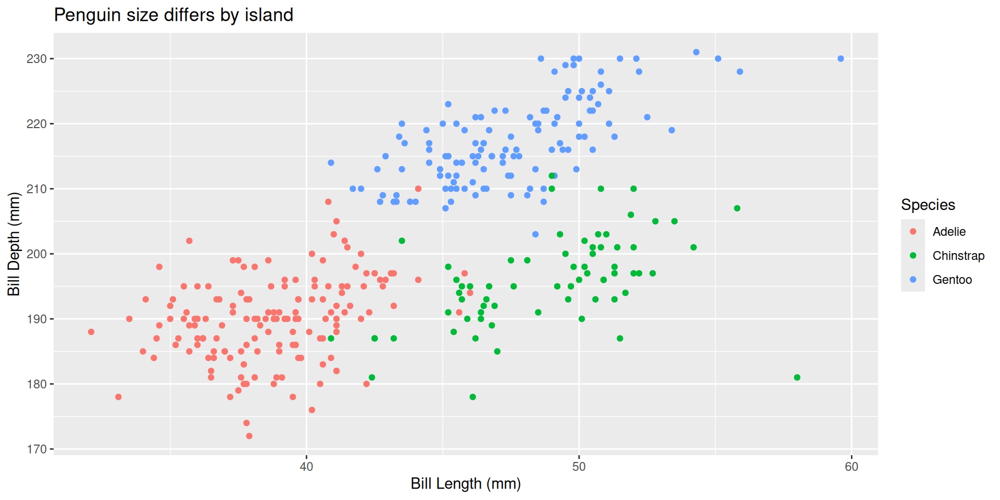
Compares one species to another species.
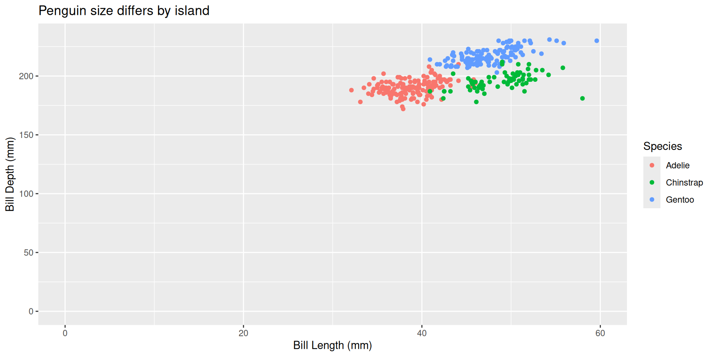
Compares each species to a baseline of zero.

Pay attention to where the x = 40 and x = 60 lines are…
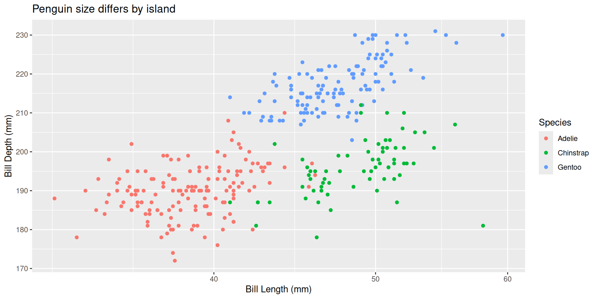
Limits and Scales
Emphasize certain comparisons (and occlude others) by altering the limits of the axes to include a relevant baseline and by using non-linear scales.
lims()scale_x_log10()scale_y_log10()- General
scale_family of layers
Facilitating Comparison
- How does this compare to that?
- How does this compare to what’s typical?
- How big is this variability relative to that variability?
How could I make it easiest to understand the relative commonality of the three species?
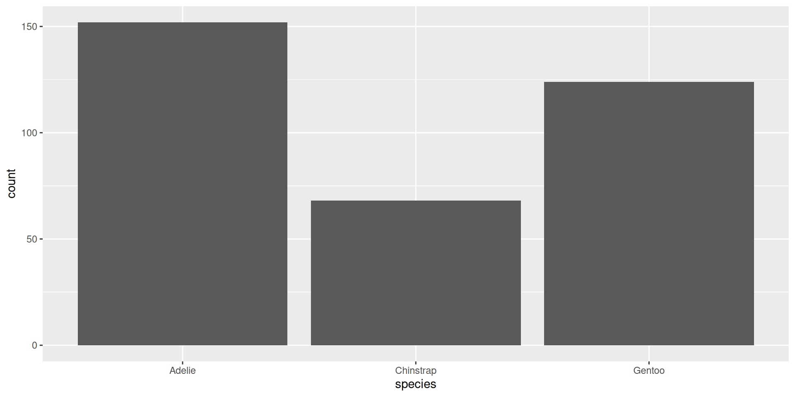
forcats
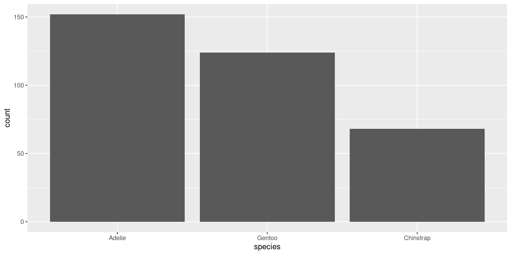
Polish Your Look
Theme
A set of visual design choices for the plot on things like the background, the gridlines, the axes, the tick marks, and the fonts.
Some ggplot2 themes (each one can be added as layer)
theme_gray(): the defaulttheme_bw()theme_minimal()

EV: Explanatory Plot A
The Plan
Audience: Residents and decisions makers in all fifty states.
My story: There is considerable variability from state to state in EV registrations.
My strategy: Display the registration counts in a manner that makes it easy to see the counts of each individual state equally well.
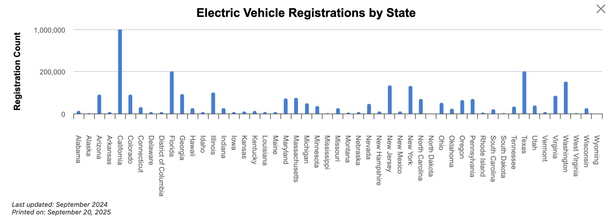
Where we left off
Where we left off
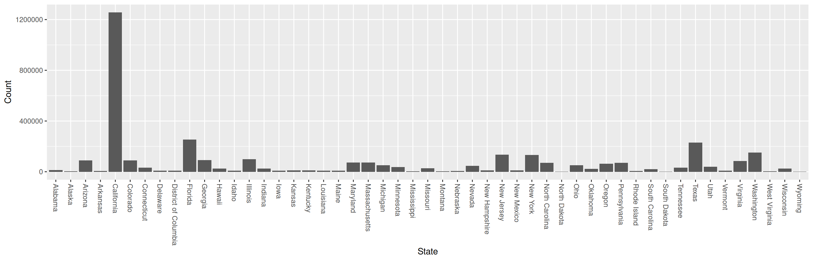
Labels
Labels
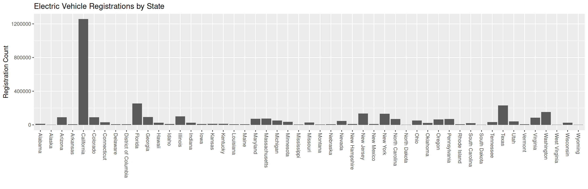
Labels
Labels
Labels
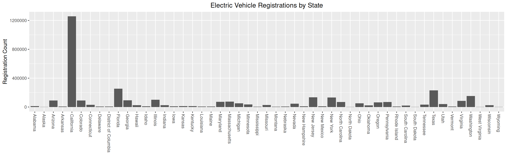
What next?
Facilitating Comparisons
Facilitating Comparisons
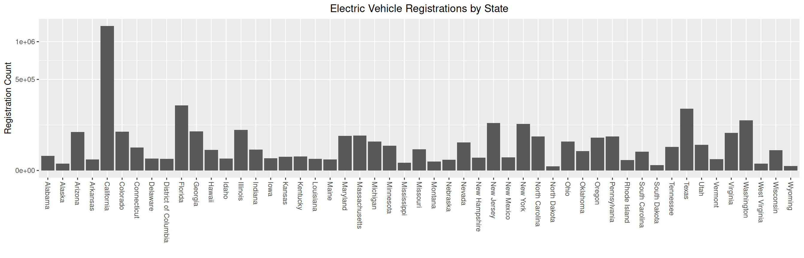
Facilitating Comparisons
Facilitating Comparisons
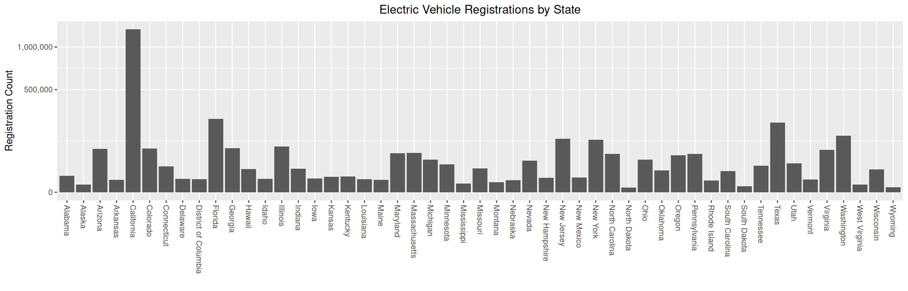
What next?
Themes
ev |>
ggplot(aes(x = State, y = Count)) +
geom_col() +
theme(axis.text.x = element_text(angle = 270,
hjust = 0,
vjust = 0.5),
plot.title = element_text(hjust = 0.5)) +
labs(title = "Electric Vehicle Registrations by State",
x = "",
y = "Registration Count") +
scale_y_sqrt(labels = scales::comma) +
theme_minimal()Themes
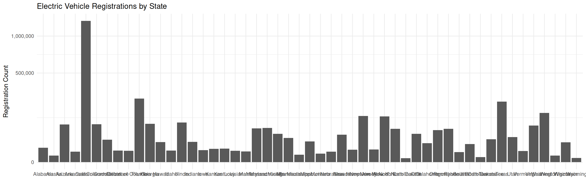
Themes
ev |>
ggplot(aes(x = State, y = Count)) +
geom_col() +
theme_minimal(axis.text.x = element_text(angle = 270,
hjust = 0,
vjust = 0.5),
plot.title = element_text(hjust = 0.5)) +
labs(title = "Electric Vehicle Registrations by State",
x = "",
y = "Registration Count") +
scale_y_sqrt(labels = scales::comma)Error in `theme_minimal()`:
! unused arguments (axis.text.x = element_text(angle = 270, hjust = 0, vjust = 0.5), plot.title = element_text(hjust = 0.5))Themes
ev |>
ggplot(aes(x = State, y = Count)) +
geom_col() +
theme_minimal() +
theme(axis.text.x = element_text(angle = 270,
hjust = 0,
vjust = 0.5),
plot.title = element_text(hjust = 0.5)) +
labs(title = "Electric Vehicle Registrations by State",
x = "",
y = "Registration Count") +
scale_y_sqrt(labels = scales::comma)Themes
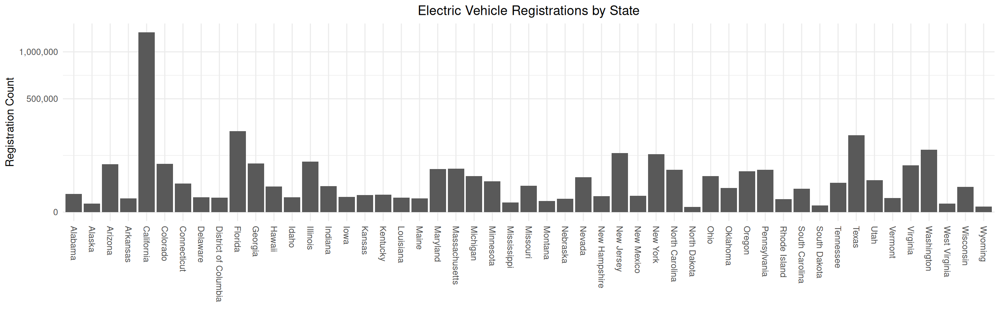
Themes
Themes describe a set of visual design choices made for the plot on things like the background, the gridlines, the axes, the tick marks, and the fonts.
Some ggplot2 themes (each one can be added as layer)
theme_gray(): the defaulttheme_bw()theme_minimal()
theme()will change defaults of the exiting theme, so add it last.
What next?
Setting Aesthetics
ev |>
ggplot(aes(x = State, y = Count)) +
geom_col(color = "blue") +
theme_minimal() +
theme(axis.text.x = element_text(angle = 270,
hjust = 0,
vjust = 0.5),
plot.title = element_text(hjust = 0.5)) +
labs(title = "Electric Vehicle Registrations by State",
x = "",
y = "Registration Count") +
scale_y_sqrt(labels = scales::comma)Setting Aesthetics
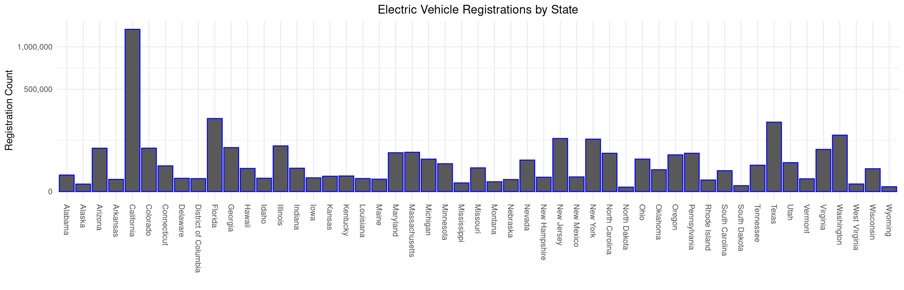
Setting Aesthetics
ev |>
ggplot(aes(x = State, y = Count)) +
geom_col(fill = "blue") +
theme_minimal() +
theme(axis.text.x = element_text(angle = 270,
hjust = 0,
vjust = 0.5),
plot.title = element_text(hjust = 0.5)) +
labs(title = "Electric Vehicle Registrations by State",
x = "",
y = "Registration Count") +
scale_y_sqrt(labels = scales::comma)Setting Aesthetics
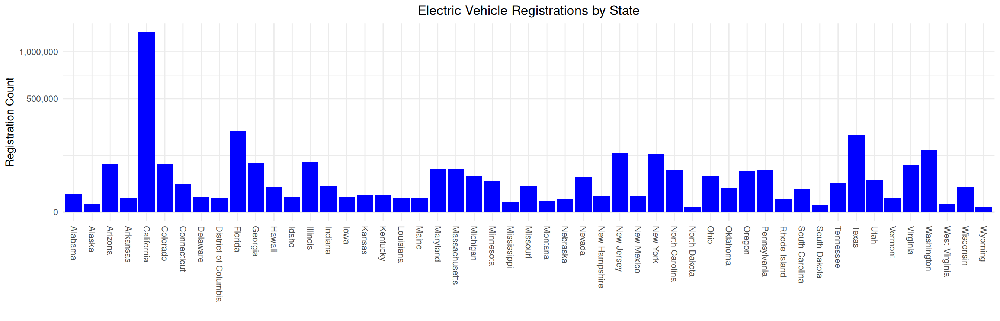
ev |>
ggplot(aes(x = State, y = Count)) +
geom_col(fill = "steelblue") +
theme_minimal() +
theme(axis.text.x = element_text(angle = 270,
hjust = 0,
vjust = 0.5),
plot.title = element_text(hjust = 0.5)) +
labs(title = "Electric Vehicle Registrations by State",
x = "",
y = "Registration Count") +
scale_y_sqrt(labels = scales::comma)EV: Explanatory Plot B
The Plan
Audience: Residents and decisions makers in all fifty states.
My story: Just a few states account for most of the electrical vehicle registrations
My strategy: Display the registration counts in a manner that draws attention to the discrepancy between the highets and lowest states.
ev |>
ggplot(aes(x = State, y = Count)) +
geom_col(fill = "steelblue") +
theme_minimal() +
theme(axis.text.x = element_text(angle = 270,
hjust = 0,
vjust = 0.5),
plot.title = element_text(hjust = 0.5)) +
labs(title = "Electric Vehicle Registrations by State",
x = "",
y = "Registration Count") +
scale_y_sqrt(labels = scales::comma)ev |>
mutate(State = fct_reorder(State, Count, .desc = TRUE)) |>
ggplot(aes(x = State, y = Count)) +
geom_col(fill = "steelblue") +
theme_minimal() +
theme(axis.text.x = element_text(angle = 270,
hjust = 0,
vjust = 0.5),
plot.title = element_text(hjust = 0.5)) +
labs(title = "Electric Vehicle Registrations by State",
x = "",
y = "Registration Count") +
scale_y_sqrt(labels = scales::comma)ev |>
mutate(State = fct_reorder(State, Count, .desc = TRUE)) |>
ggplot(aes(x = State, y = Count)) +
geom_col(fill = "steelblue") +
theme_minimal() +
theme(axis.text.x = element_text(angle = 270,
hjust = 0,
vjust = 0.5),
plot.title = element_text(hjust = 0.5)) +
labs(title = "Electric Vehicle Registrations by State",
x = "",
y = "Registration Count")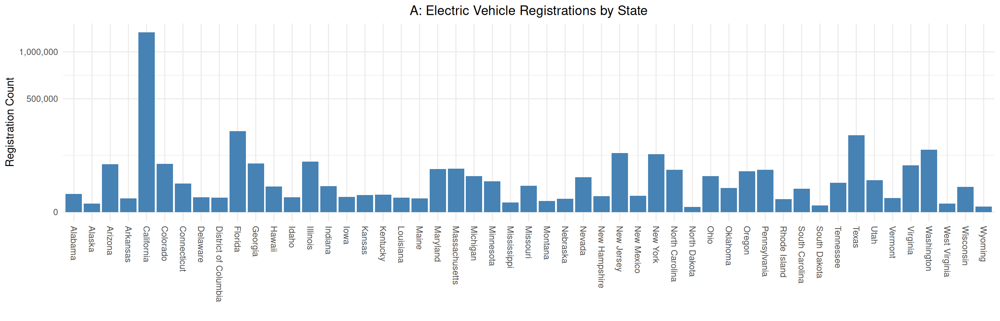
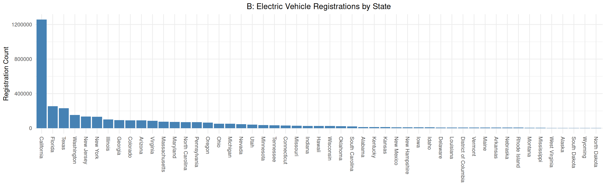
Key Ideas for Today
- EDA uncovers structure and generates new questions.
- Explanatory plots tell one story to one audience.
- Labels and scales clarify and focus comparisons.
- Themes and set aesthetics polish the look.
For Next Time
- Quiz 3 is Mon/Tue (10/5-10/6) on PrairieTest.
- Start PS 4, due Saturday 10/17 at 11:59 pm.
- Keep collecting your personal data exports for Project 3.